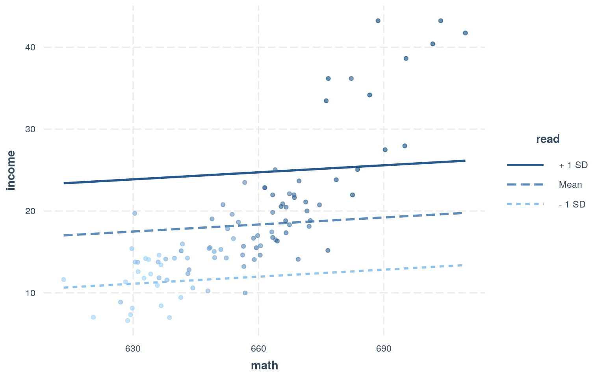

The dataset that we are going to model and test looks into the test score data and income in California Schools in different counties across California. Some of the variables that we will take into account include County, District Average income(in 1,000 USD), average reading score, average math score, and number of computers. A categorical variable (County) is include with 6 groups, a total of 97 observations for Average reading score in schools in a specific county, a total of 97 observations of Average math score in schools in a specific county, and 97 observations of total number of computers in schools in a county.
data(CASchools_County)
CASchools_County %>% count(county)## # A tibble: 6 x 2
## county n
## <chr> <int>
## 1 Los Angeles 27
## 2 Orange 11
## 3 Sacramento 7
## 4 San Diego 21
## 5 Santa Barbara 11
## 6 Santa Clara 20CASchools_County %>% select(read,math,income,computer)## # A tibble: 97 x 4
## read math income computer
## <dbl> <dbl> <dbl> <dbl>
## 1 612. 613. 11.6 0
## 2 619. 620. 7.02 960
## 3 620. 629. 6.61 569
## 4 621. 630. 8.13 721
## 5 625. 628. 11.3 177
## 6 630. 629. 7.33 175
## 7 630. 631. 12.6 1423
## 8 628. 633. 11.8 1306
## 9 628. 634. 14.1 786
## 10 630. 634. 12.3 896
## # … with 87 more rowsCASchool_Man <- manova(cbind(read,math)~county,data = CASchools_County)
summary(CASchool_Man)## Df Pillai approx F num Df den Df Pr(>F)
## county 5 0.30151 3.2308 10 182 0.0007418 ***
## Residuals 91
## ---
## Signif. codes: 0 '***' 0.001 '**' 0.01 '*' 0.05 '.' 0.1
' ' 1summary.aov(CASchool_Man)## Response read :
## Df Sum Sq Mean Sq F value Pr(>F)
## county 5 8753.8 1750.76 5.214 0.0002969 ***
## Residuals 91 30556.1 335.78
## ---
## Signif. codes: 0 '***' 0.001 '**' 0.01 '*' 0.05 '.' 0.1
' ' 1
##
## Response math :
## Df Sum Sq Mean Sq F value Pr(>F)
## county 5 8931.8 1786.36 5.5774 0.0001581 ***
## Residuals 91 29146.0 320.29
## ---
## Signif. codes: 0 '***' 0.001 '**' 0.01 '*' 0.05 '.' 0.1
' ' 1CASchools_County%>%group_by(county)%>%summarize(mean(read),mean(math))## # A tibble: 6 x 3
## county `mean(read)` `mean(math)`
## <chr> <dbl> <dbl>
## 1 Los Angeles 645. 646.
## 2 Orange 653. 656.
## 3 Sacramento 638. 636.
## 4 San Diego 659. 661.
## 5 Santa Barbara 667. 667.
## 6 Santa Clara 665. 665.pairwise.t.test(CASchools_County$read,
CASchools_County$county, p.adj="none")##
## Pairwise comparisons using t tests with pooled SD
##
## data: CASchools_County$read and CASchools_County$county
##
## Los Angeles Orange Sacramento San Diego Santa Barbara
## Orange 0.2502 - - - -
## Sacramento 0.3806 0.1068 - - -
## San Diego 0.0081 0.3186 0.0092 - -
## Santa Barbara 0.0014 0.0776 0.0019 0.3002 -
## Santa Clara 0.0003 0.0673 0.0011 0.3057 0.8609
##
## P value adjustment method: nonepairwise.t.test(CASchools_County$math,
CASchools_County$county, p.adj="none")##
## Pairwise comparisons using t tests with pooled SD
##
## data: CASchools_County$math and CASchools_County$county
##
## Los Angeles Orange Sacramento San Diego Santa Barbara
## Orange 0.12256 - - - -
## Sacramento 0.19875 0.02441 - - -
## San Diego 0.00407 0.42204 0.00176 - -
## Santa Barbara 0.00187 0.17075 0.00071 0.44019 -
## Santa Clara 0.00048 0.17694 0.00039 0.50193 0.83602
##
## P value adjustment method: none##2 Randomization Test
set.seed(348)
rand_Cor <- vector()
for(i in 1:5000){
cor.test(CASchools_County$income,CASchools_County$english)
}##3 Linear Regression model
A liner regression model will be used to predict the interaction with district average income with average math scores and average reading scores.
fit <- lm(income ~ math + read, data = CASchools_County)
summary(fit)##
## Call:
## lm(formula = income ~ math + read, data =
CASchools_County)
##
## Residuals:
## Min 1Q Median 3Q Max
## -8.4741 -2.6964 -0.4326 2.5269 11.9893
##
## Coefficients:
## Estimate Std. Error t value Pr(>|t|)
## (Intercept) -206.86934 13.99011 -14.787 < 2e-16 ***
## math 0.02864 0.08163 0.351 0.726480
## read 0.31491 0.08034 3.920 0.000168 ***
## ---
## Signif. codes: 0 '***' 0.001 '**' 0.01 '*' 0.05 '.' 0.1
' ' 1
##
## Residual standard error: 4.15 on 94 degrees of freedom
## Multiple R-squared: 0.7398, Adjusted R-squared: 0.7343
## F-statistic: 133.6 on 2 and 94 DF, p-value: < 2.2e-16We associate an increase of 1 increase (1,000USD) in district income with an increase of 0.02864 in Average math score adjusting for or controlling for Average reading score. We associate an increase of 1 increase (1,000USD) in district income with an increase of 0.31491 in Average reading score adjusting for or controlling for Average math score.
Approxiately 73.98% variation in income can be explained by the model (Average math and Average reading scores).
library(interactions)
interact_plot(fit, pred = math, modx =read, plot.points = TRUE)